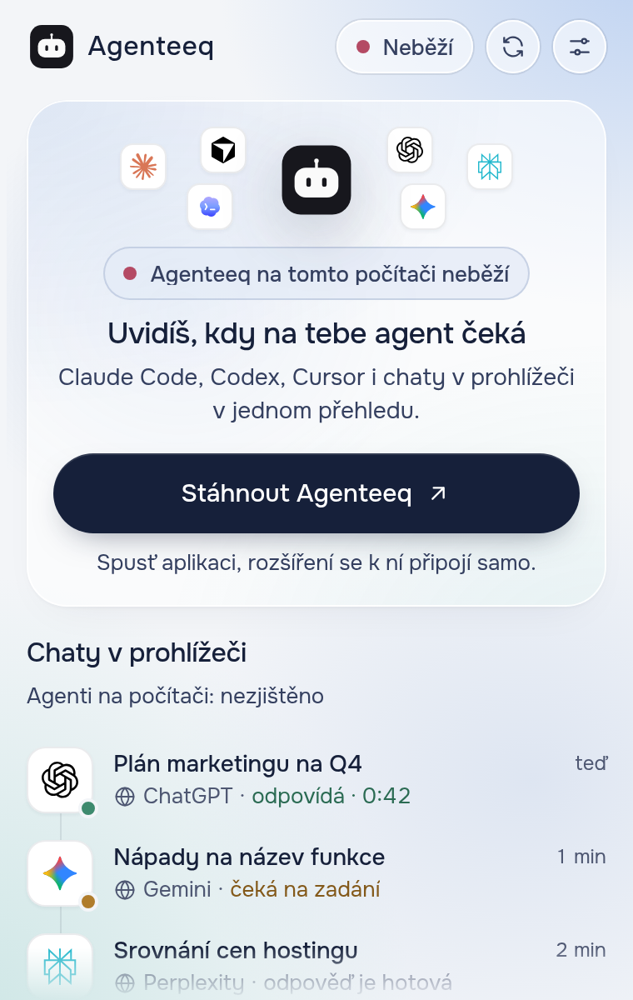

Tvoje chaty zůstávají na tvém počítači.
Stav, názvy a viditelné zprávy rozšíření předává jen spárované místní aplikaci Agenteeq.
- Obsah chatů neodesílá na internet
- Data jdou jen do aplikace na tvém počítači
- Každou službu můžeš vypnout
Stav, názvy a viditelné zprávy rozšíření předává jen spárované místní aplikaci Agenteeq.

Rozšíření řekne, když místní aplikace neběží